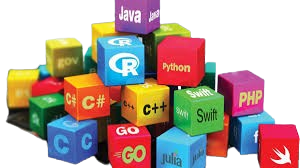

Marcel J. DJIOFACK
- Born: April 13, 2005 in Nkpa, Littoral Region, Cameroon
-
Education:
- Currently a second-year student in computer science at the University of Dschang
-
Interests:
- Aspiring software engineer with a focus on Java and JavaScript
- Christian
About Marcel:
Marcel J. Djiofack is a young man with a bright future ahead of him, his slogan is "born to shine". He was born on April 13, 2005 in Nkapa, Littoral Region, Cameroon. He is currently a second-year student in computer science at the University of Dschang.
Marcel is a talented and hardworking student. He is passionate about computer science and is eager to learn new things. He is also a devout Christian and is active in his church community.
 In the future, Marcel hopes to become a software engineer. He is particularly interested in developing software using Java and JavaScript. He is confident that he can achieve his goals with hard work and dedication.